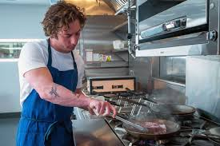
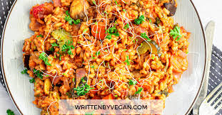
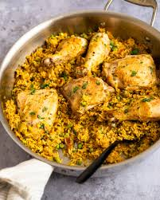
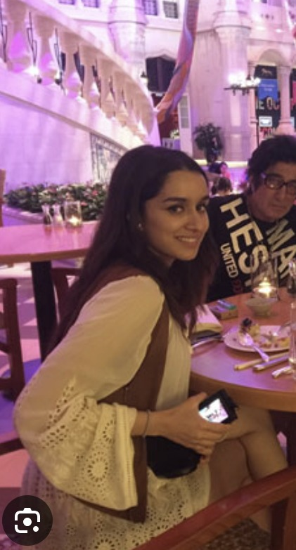

Meet Our Chefs

Chef Carmy Berzatto: A culinary expert with over 20 years of experience in fusion cuisine. He is not only a creator but also a leader and a mentor, inspiring their team to reach new heights and fostering a collaborative environment where creativity flourishes."I have worked in the best restaurants in the world. And I have been the best. But I was never myself."
~by Carmy Berzatto
Chef Vinsmoke Sanji: A cooking artist known for his delicate balance of flavors. The chef epitomizes the pinnacle of culinary excellence, blending artistry with technical mastery to create unforgettable dining experiences."Don't start a fight you can't finish. But if you're gonna fight, fight to win.Of course in Cooking"
~by Vinsmoke Sanji
Chef Carlos Rivera: A specialist in Latin American and Mediterranean cuisine.With a discerning palate and an innovative approach, he craft dishes that push the boundaries of traditional cuisine while respecting time-honored techniques. Every creation is meticulously designed to offer a harmonious balance of taste, texture, and visual appeal."I always believe in myself and say the same to my junior chef's"
~by Carlos Rivera
Our Menu
 Breakfast: Pancakes, Omelettes, Smoothies
Breakfast: Pancakes, Omelettes, Smoothies Starters: Garlic Bread, Soup, Spring Rolls
Starters: Garlic Bread, Soup, Spring Rolls Main Course: Pasta, Grilled Chicken, Vegan Bowls
Main Course: Pasta, Grilled Chicken, Vegan Bowls Snacks: French Fries, Chicken Wings, Nachos
Snacks: French Fries, Chicken Wings, Nachos Salads: Caesar Salad, Greek Salad, Quinoa Salad
Salads: Caesar Salad, Greek Salad, Quinoa Salad Juice: Fresh Orange Juice, Apple Juice, Smoothies
Juice: Fresh Orange Juice, Apple Juice, Smoothies Desserts: Cheesecake, Brownies, Fruit Tart
Desserts: Cheesecake, Brownies, Fruit Tart
Suggetions by our chef's
Chef Carmy Berzatto: Pasta Carbonara, Seasonal Vegetable Risotto

Seasonal Vegetable Risotto is a creamy, decadent dish that bursts with the vibrant flavors of freshly harvested vegetables. Imagine tender, al dente Arborio rice cooked slowly in a rich vegetable broth, absorbing every bit of its savory goodness. A colorful medley of the season’s best vegetables—like sweet roasted butternut squash, earthy mushrooms, crisp asparagus, and vibrant peas—are folded into the risotto, each bite offering a unique texture and taste. The dish is finished with a sprinkle of sharp Parmesan cheese, fresh herbs, and a drizzle of olive oil, bringing out the dish’s velvety richness and bright, natural flavors. Perfectly comforting and deliciously light, this risotto is a celebration of nature’s bounty.
Chef Vinsmoke Sanji: Seafood Curry, Tempura

Tempura is a delicate Japanese dish that brings together crispiness and flavor in perfect harmony. Imagine fresh shrimp, vegetables, or fish lightly dipped in a feather-light batter and then flash-fried to golden perfection. Each bite offers an airy crunch, revealing the succulent, tender interior. The tempura is served piping hot, with a side of savory dipping sauce made from soy, dashi, and mirin that enhances its umami goodness. Accompanied by grated daikon and a hint of ginger, the dish’s balance of texture and subtle flavor makes it an irresistible indulgence, light yet incredibly satisfying.
Chef Carlos Rivera: Arroz con Pollo, Ceviche, Paella

Arroz con Pollo is a vibrant, flavor-packed dish that combines tender chicken and perfectly seasoned rice into a heartwarming, comforting meal. The chicken is first seared to golden perfection, locking in its juices, then simmered with fragrant garlic, onions, and bell peppers. As the rice slowly cooks, it absorbs a rich blend of spices like cumin, saffron, and smoked paprika, infusing every grain with deep, earthy warmth. Finished with a sprinkle of fresh cilantro and a squeeze of lime, each bite is a satisfying harmony of savory, smoky, and zesty flavors, making Arroz con Pollo the ultimate comfort food.
Why We Are Best
"At CookGuide, we pride ourselves on delivering the finest culinary experiences.Excellence isn't just a standard; it's our passion. We don’t just serve food; we craft unforgettable experiences, where every detail is meticulously perfected to delight your senses and elevate your dining journey."
A Culinary Delight: NTR's Review of CookGuide
I had the privilege of dining at CookGuide last evening, and let me start by saying, it was an experience to remember. As someone who appreciates fine cuisine, I was thoroughly impressed by the incredible flavors, the warm hospitality, and the passion behind every dish served at this remarkable restaurant. From the moment I walked in, I was struck by the vibrant yet cozy atmosphere, a perfect blend of elegance and comfort. The staff greeted me with a smile and made sure I felt at home right away. But what truly stood out was the food – it was nothing short of extraordinary.

A Culinary Delight: Shraddha Kapoor’s Review of CookGuide
The main course was a revelation. I opted for the Seasonal Vegetable Risotto, and it was divine! Creamy, rich, and packed with fresh, colorful vegetables – it felt like I was tasting nature’s bounty in every spoonful. The dish was crafted with so much love and attention to detail; it’s clear that the chefs here are passionate about what they do. To end the meal on a sweet note, I indulged in their signature dessert. The balance of flavors, the perfect sweetness, and the artistic presentation left me speechless. It was one of the best desserts I’ve had in a long time.
Welcome the Champions: A Special Visit from the Indian Cricket Team
At CookGuide, we had the incredible honor of hosting the Indian cricket team, a moment that left our kitchen and our hearts brimming with excitement! With their love for food and teamwork, the team enjoyed a curated dining experience featuring the best of Indian and global cuisine, prepared with love and perfection.A Meal Fit for Champions Our kitchen team made sure every dish represented not just taste but the passion we pour into our food. We were thrilled to see the smiles and satisfaction on the faces of our nation’s heroes!
"Our team innovates continuously to offer a memorable dining experience."Our Branches
Visit our branches at Manhattan, New York; Beverly Hills, California; Downtown, Chicago; Miami Beach, Florida.
Available On
Order our meals through Zomato, Swiggy, or Uber Eats.